- Developed a gearbox fatigue test system to characterize drivetrain durability under race-representative loading and reduce uncertainty in fatigue-life predictions.
- Designed, fabricated, and assembled a drivetrain test stand integrating engine, gearbox, and brake subsystems to reproduce cyclic loading and braking-induced torque transients.
- Integrated Hall-effect and brake-line pressure instrumentation to track rotational speed, estimate applied torque, and enable reliable load monitoring over 100k+ cycles.
- Correlated experimental results with FEA and Miner's Rule fatigue modeling to identify tooth root bending stress as the dominant fatigue failure and guide future gearbox durability and mass optimization decisions.
SolidWorksFatigue TestingGear Design
Test Stand DesignHall-Effect SensorsMiner's Rule
Fabrication / WeldingFEAPython
Situation
- Bruin Baja Racing lacked empirical fatigue-life data for the gearbox, creating uncertainty around drivetrain durability and potential weight optimization opportunities.
- The objective was to develop a repeatable testing methodology capable of reproducing race-representative loading and generating real fatigue-life data.
- The long-term goal was to correlate experimental results with analytical fatigue predictions to guide future gearbox design decisions.
Action
- Identified braking events, torque spikes, and obstacle-induced cyclic loading as the primary fatigue drivers acting on the gearbox during competition.
- Designed a complete drivetrain fatigue test stand consisting of an engine, gearbox, custom shaft coupler, A36 steel frame, and hydraulic brake subsystem.
- Modeled and fabricated the system in-house using SolidWorks, laser-cut steel plates, welded tubing, and custom-machined drivetrain components.
- Integrated Hall-effect sensors, load measurement instrumentation, FEA, and Miner's Rule fatigue modeling to quantify loading conditions and predict gearbox life.
Test Stand Architecture
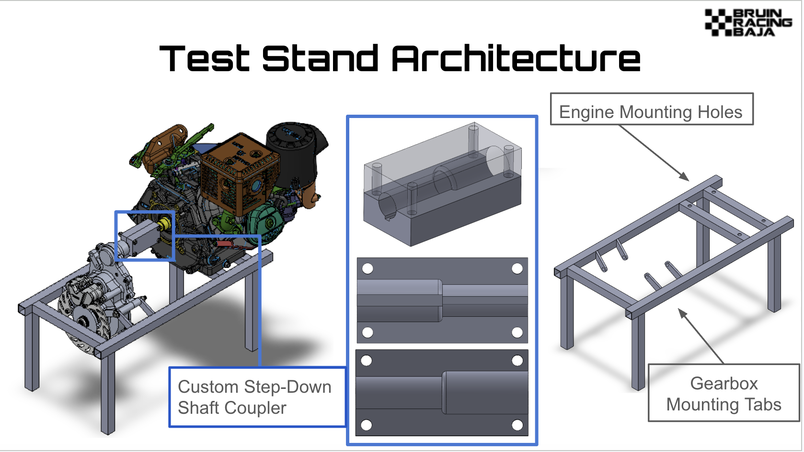
SolidWorks assembly — engine + gearbox + A36 frame + custom shaft coupler + brake subassembly
Fabricating drivetrain test stand components in UCLA's machine shop prior to assembly and instrumentation.
Gear Load Analysis
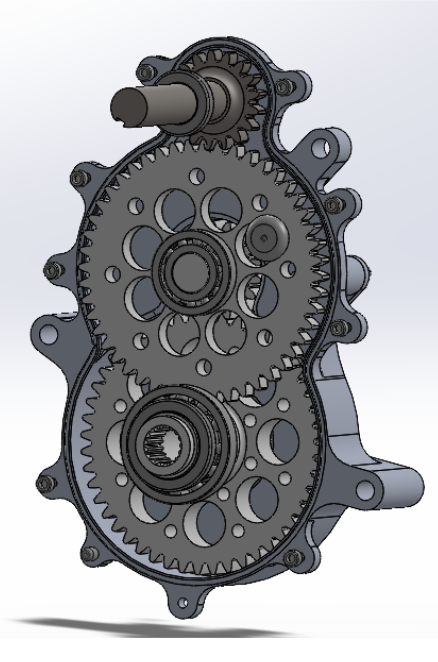
Gearbox CAD — 48/18 × 48/18 = 7.1:1 overall ratio
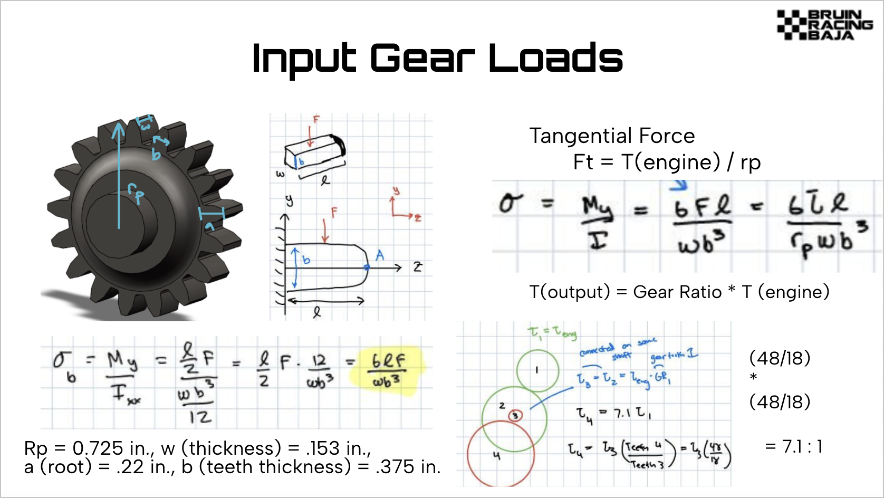
Tooth-root bending stress derivation — Rp = 0.725 in., σ = 6Tl / (r_p · w · b²)
Brake System & Miner's Rule
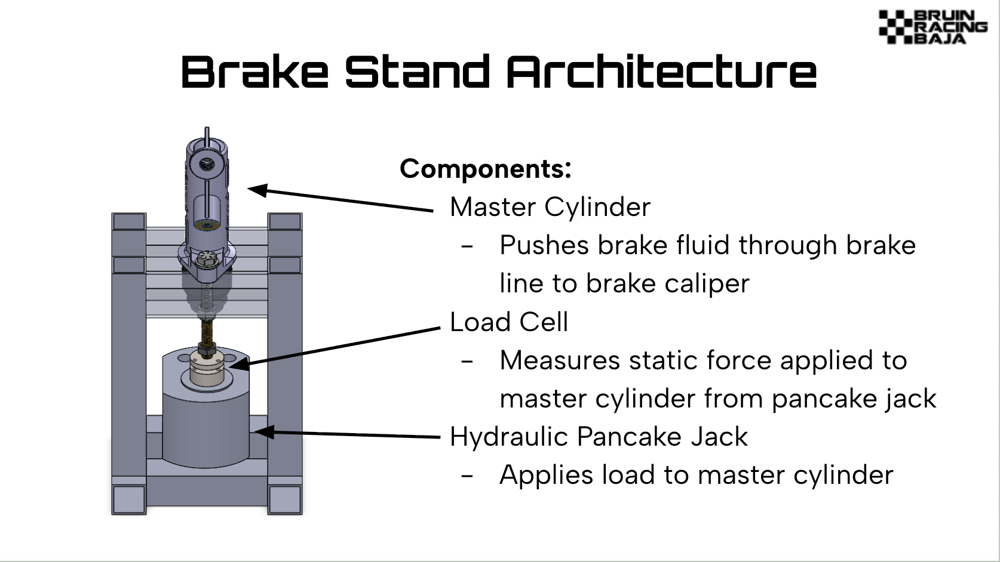
Brake subassembly — master cylinder, load cell, hydraulic pancake jack
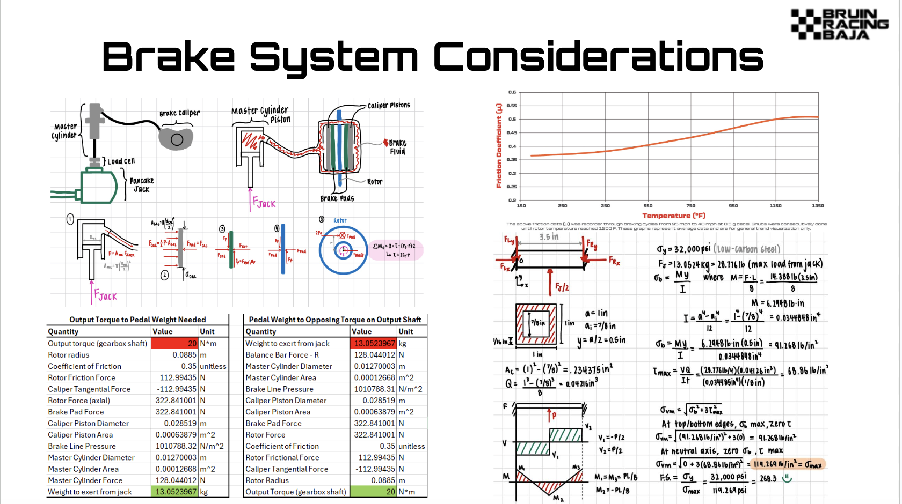
Brake calculations — pressure, caliper force, rotor friction force, and output torque sizing
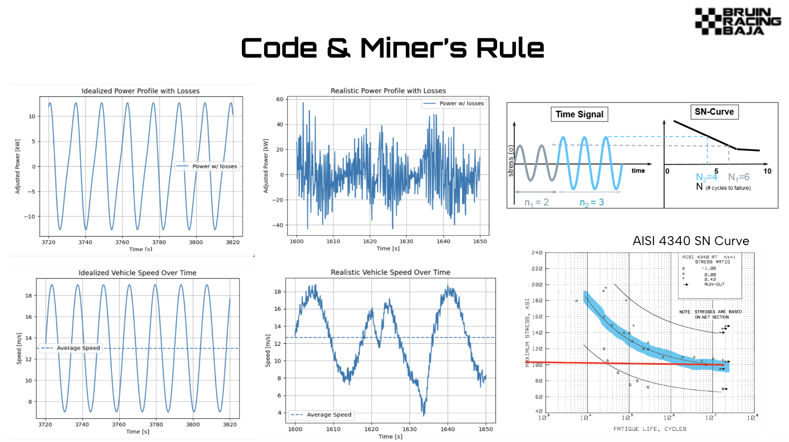
Python Miner's Rule model using AISI 4340 S-N curve
Result
- Developed a fully instrumented gearbox fatigue testing system capable of generating repeatable durability data under representative race conditions.
- Established a framework for comparing cycles-to-failure against analytical fatigue predictions and identifying dominant failure mechanisms.
- Designed, fabricated, and assembled major test stand subsystems including the frame, shaft coupler, brake loading system, and instrumentation package.
- Created a platform that can be used to validate future gearbox designs, improve durability, and support drivetrain mass reduction efforts.
- Redesigned front suspension A-arms by replacing 4130 steel members with a carbon-fiber composite, improving structural efficiency while achieving 20% mass reduction.
- Performed structural analyses across braking and combined cornering load cases to evaluate stress distributions, buckling resistance, and design margins under competition loading.
- Optimized composite tube geometries through OD/ID trade studies and material selection, choosing uni-rolled carbon fiber based on strength-to-weight and cost-performance considerations.
- Designed 6061-T6 aluminum plugs and wafer interfaces in SolidWorks to transfer suspension loads into composite members while satisfying manufacturability and assembly requirements.
SolidWorksComposite DesignBuckling Analysis
ANSYS FEAExcel SolverVehicle DynamicsDFM
Situation
- The existing 4130 steel A-arms met performance requirements, but suspension mass directly impacts vehicle handling, acceleration, and overall performance.
- The objective was to evaluate whether a carbon-fiber composite architecture could reduce weight while maintaining sufficient strength and stiffness under competition loading.
- The project focused on developing a lightweight design that balanced structural performance, manufacturability, and cost.
Action
- Identified critical suspension load cases including braking, cornering, and combined braking-cornering conditions through free-body diagrams and suspension force analysis.
- Developed CAD models of composite A-arm concepts and performed ANSYS simulations to evaluate stress distribution, deflection, safety margins, and buckling behavior.
- Designed CNC-machined 6061-T6 aluminum plugs and interface components to transfer loads from suspension joints into the carbon-fiber tubes while minimizing local stress concentrations.
- Performed trade studies on tube diameter and wall thickness to optimize stiffness-to-weight ratio while maintaining acceptable structural margins.
SolidWorks Design
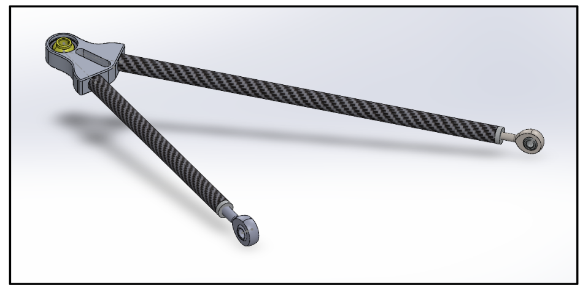
Rear upper CF A-arm assembly — uni-rolled CF tubes + 6061-T6 Al wafer + plugs + rod ends
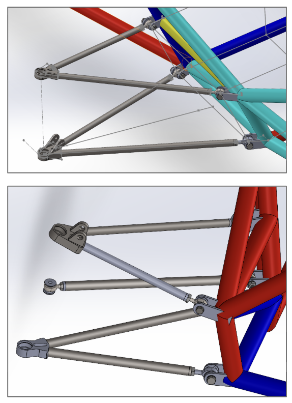
Front suspension assembly — current steel geometry used as baseline for CF redesign
OD/ID Optimization
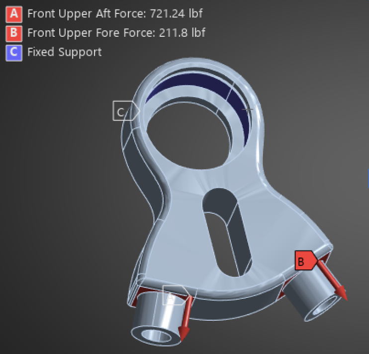
Load case setup — front upper aft/fore forces and fixed support used to evaluate member loading
FEA & Material Selection
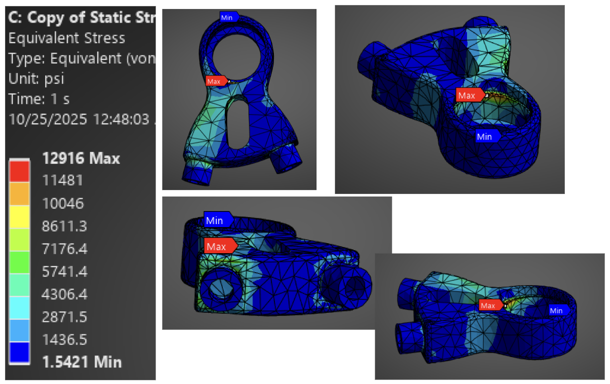
Wafer FEA collage — von Mises stress views identifying critical geometry regions
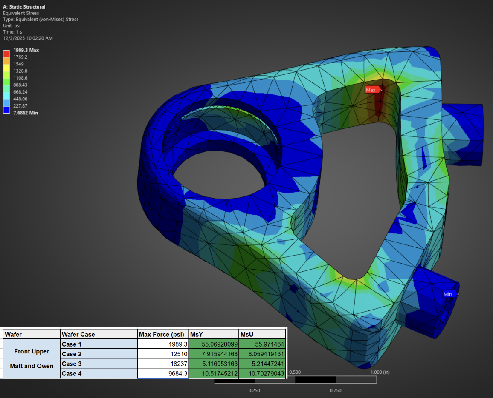
Detailed wafer FEA — design margins across load cases for the front upper wafer
Result
- Achieved approximately 20% mass reduction compared to the baseline steel design while maintaining required structural performance across analyzed load cases.
- Demonstrated the feasibility of a carbon-fiber suspension architecture for reducing unsprung mass without compromising durability.
- Developed a deeper understanding of composite load transfer, lightweight structural design, and the tradeoffs between weight, manufacturability, cost, and reliability.
- Designed and modeled an actuated colonoscopy snare in SolidWorks, developing and refining the mechanism through multiple design iterations.
- Evaluated different materials to replicate the flexibility and mechanical behavior of a colonoscope, allowing realistic testing of the device.
- Built and tested a large-scale prototype to verify functionality, identify design issues, and guide development of a micro-scale version for medical applications.
SolidWorksMedical Device PrototypingMechanism Design
Material TestingRapid PrototypingDesign Iteration
Situation
- The project focused on developing an actuated colonoscopy snare concept for a medical device application.
- The main challenge was creating a mechanism that could eventually function at a small scale while still being testable during early prototyping.
- The prototype also needed to approximate the flexibility and mechanical behavior of a colonoscope so testing would better reflect realistic use conditions.
Action
- Modeled the actuated snare mechanism in SolidWorks and refined the design through multiple CAD iterations.
- Experimented with different materials to mimic the flexural rigidity and mechanical response of a colonoscope.
- Built a large-scale prototype to troubleshoot functionality before translating the mechanism toward a more precise micro-scale version.
- Tested prototype motion and used the results to identify design issues, improve actuation behavior, and guide future design changes.
Result
- Created a functional large-scale prototype that helped validate the core actuation concept and reveal design issues early.
- Developed a clearer path for translating the mechanism into a more compact, micro-scale medical device prototype.
- Gained experience connecting CAD design, material selection, physical prototyping, and functional testing in a medical robotics context.